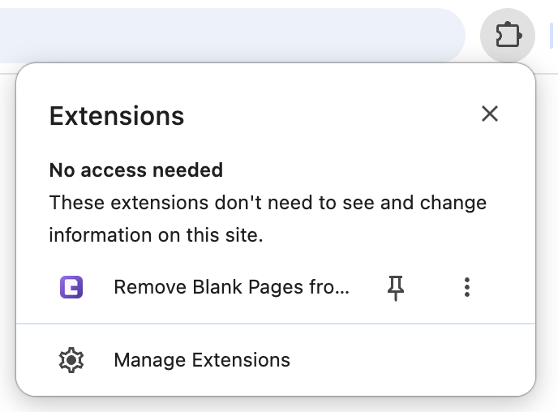
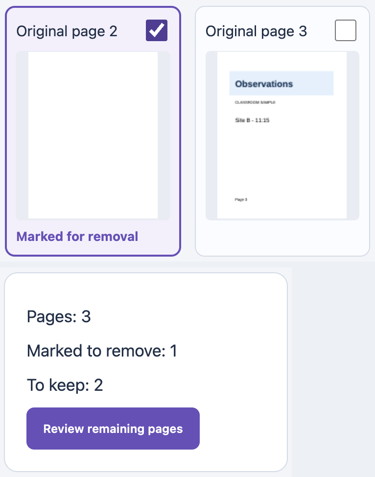
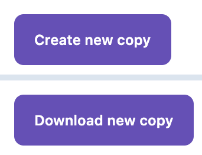

Remove Blank Pages from PDF
Welcome to Remove Blank Pages from PDF
Remove blank or unwanted pages and save a separate PDF.
Already pinned? See how to use it.-
Pin the extension
Click Extensions in the Chrome toolbar, then click the pin beside Remove Blank Pages from PDF.

-
Open the extension
Click Remove Blank Pages from PDF on your Chrome toolbar to open the PDF editor.

Chrome screenshots
Remove blank pages from your first PDF
Show how to pin it-
Open the editor
Click Remove Blank Pages from PDF on Chrome’s toolbar or choose it from the Extensions menu.

-
Choose a PDF
Click Choose PDF in the editor and select a file from your device.

-
Mark pages and review what stays
Check the box on each blank or unwanted page. Click Review remaining pages to check which pages will stay and in what order.

-
Save a new copy
Click Create new copy, then Download new copy. Chrome downloads a separate PDF and keeps your original file.
